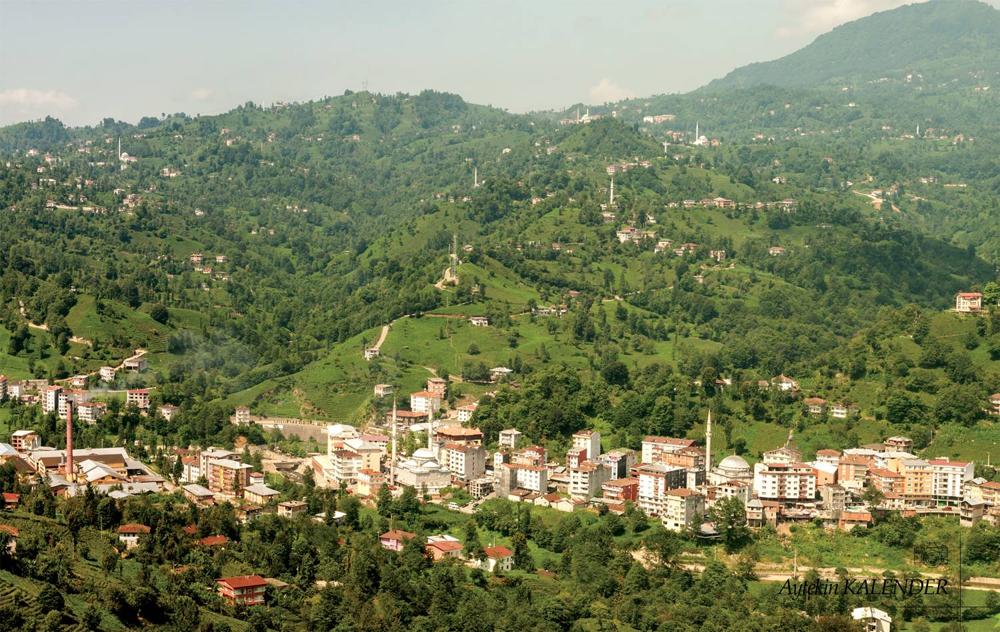

Kalkandere, Rize ilinin batısında yer alan ilçedir. İlçe, Rize merkez, İyidere, İkizdere ve Trabzon ilinin Of ilçeleriyle çevrili 95 km² lik alana sahiptir. Deniz sahiline uzaklığı 13 km mesafededir.
İlçe, oldukça engebeli bir arazi yapısına sahiptir. Arazinin tümü ağaç ve yeşil bitki örtüsüyle kaplıdır. Düzlük arazi yok denebilecek kadar azdır. Bölgede vadi aralarında büyük-küçük birçok dere akmaktadır. İlçe sınırları içerisinde yükseklikleri 1.000 metrenin altında olan birçok tepe mevcuttur.İlçe merkezinin deniz seviyesinden yüksekliği yaklaşık 200 m'dir.
İlçenin bilinen en eski adı Karadere'dir. İlçe merkezinden geçmekte olan derenin yatağındaki kara tasların, suyun rengini kara göstermesi ilçenin bu adı almasına sebep olmuştur. Daha sonra bu ad Kalkandere olarak değiştirilmiştir. Başka bir düşünceye göre derenin bol su getirerek taşmasına atıfta bulunularak " Kabaran Dere " anlamında Kalkandere denmiştir. Üçüncü anlamı da kötülüklere karşı koymaktır.
Kalkandere, sırasıyla Kimmerler, Persler, Selçuklular ve Trabzon İmparatorluğu'nun egemenliği altında kalmış, 1461'de Fatih Sultan Mehmet'in Trabzon İmparatorluğu'nu ortadan kaldırması ile Osmanlı İmparatorluğu'na katılmıştır.
11. yüzyılda başlayan büyük Türk göçü ile Kars-Çoruh yolu üzerinden Selçuklu Türkleri'nin bölgeye ilk defa giriş yaptığı bilinmektedir.
Kalkandere, Osmanlı İmparatorluğu döneminde Trabzon Vilayeti'nin Lazistan Sancağındaki Rize Kazasına bağlı bir nahiye merkeziydi.
Kalkandere, Rize İli'ne bağlı eski bir bucak merkezi iken 27.06.1957 tarihinde yürürlüğe giren 7033 Sayılı Kanunla ilçe olmuştur.